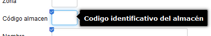
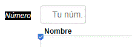

Los archivos i18n permiten personalizar las etiquetas y los mensajes de tu aplicación, tanto si necesitas varios idiomas como si no. Si tu aplicación solo utiliza un idioma, basta con tener una versión del archivo en ese idioma.
Para mostrar u ocultar en el registro las advertencias sobre etiquetas o mensajes que faltan, establece i18nWarnings en src/main/resources/xava.properties a true o false respectivamente. Antes de OpenXava 7, este archivo estaba en properties/xava.properties.
Por defecto, OpenXava utiliza el idioma preferido del usuario para el contenido web, configurado en el navegador. Es independiente del idioma de los menús del navegador: por ejemplo, la interfaz del navegador puede estar en español y el idioma preferido para el contenido ser el catalán, en cuyo caso OpenXava utiliza el catalán. El usuario puede cambiar esta preferencia en la configuración de idiomas de su navegador.
Si se ha seleccionado explícitamente un idioma para la sesión de OpenXava, esa selección tiene prioridad. Por ejemplo, si un módulo incluye el controlador estándar UrlParameters, pasar locale=es en su URL selecciona el español y guarda esa preferencia en la sesión.
Desde la v7.6, puedes restringir los idiomas de la interfaz en src/main/resources/xava.properties:
availableLanguages=en, esCon esta configuración, OpenXava utiliza primero el idioma de la sesión si está permitido; en caso contrario, recorre los idiomas preferidos del navegador, por orden, hasta encontrar uno permitido. Si ninguno coincide, utiliza el primer idioma configurado, el inglés en este ejemplo. Usa códigos de idioma sin país ni región. Si la propiedad no está definida o está vacía, no se restringen los idiomas. Esta configuración selecciona el idioma de la interfaz; no crea traducciones.
En código Java, Locales.getCurrent(), de org.openxava.util.Locales, devuelve el locale que OpenXava está utilizando para el usuario, seleccionado como se ha descrito. Labels.get() y XavaResources.getString() utilizan este locale por defecto; pasa un Locale explícito si necesitas una traducción en otro idioma.
Elegir un idioma y resolver una traducción son pasos diferentes. OpenXava carga los archivos de etiquetas y mensajes mediante el mecanismo ResourceBundle de Java. Un locale regional puede utilizar el archivo de su idioma y el archivo base sin sufijo, si existe. Por ejemplo, una búsqueda para es_MX puede utilizar entradas de MySchool-labels_es_MX.properties, MySchool-labels_es.properties y MySchool-labels.properties. Si no existe un archivo para el locale solicitado, Java también puede intentar usar el locale por defecto de la JVM al seleccionar un archivo.
Una entrada que falta en un archivo en español no se busca automáticamente en el archivo en inglés de la aplicación. Para proporcionar entradas alternativas compartidas, crea archivos base sin sufijo de idioma, como MySchool-labels.properties y MySchool-messages.properties. Siempre que sea posible, mantén las mismas claves en todas las traducciones.
En cada búsqueda, los recursos de la aplicación tienen prioridad sobre los de OpenXava. Las etiquetas también pueden pasar de una clave calificada a otra más general, como se muestra a lo largo de este artículo. Si no se encuentra ninguna etiqueta, OpenXava normalmente genera una etiqueta legible a partir del identificador. Labels.get(id, locale, defaultText) permite proporcionar un texto alternativo. Para los mensajes, OpenXava también prueba sus mensajes incorporados en inglés antes de devolver, como último recurso, la clave del mensaje. Activa i18nWarnings para detectar las traducciones que faltan en lugar de depender de estos mecanismos alternativos.
Desde OpenXava 7, los proyectos utilizan Maven. Coloca los archivos fuente de etiquetas en src/main/resources/i18n, con el nombre <app>-labels_<lang>.properties, por ejemplo MySchool-labels_es.properties. Aquí <app> es el nombre de la aplicación y <lang> es el código del idioma, como en o es. Maven copia estos recursos al classpath de ejecución; en un WAR se empaquetan dentro de WEB-INF/classes/i18n. Edita los archivos fuente, no las copias generadas.
OpenXava proporciona sus propios archivos Labels_<lang>.properties en el paquete i18n del JAR de la dependencia. En el proyecto fuente de OpenXava, están en src/main/resources/i18n. Las etiquetas de tu aplicación tienen prioridad sobre las de OpenXava para las mismas claves, por lo que no necesitas editar los archivos del framework.
Antes de OpenXava 7, los archivos de etiquetas de la aplicación estaban en la carpeta i18n del proyecto, y los del framework en ../OpenXava/i18n. El script de construcción los copiaba a los recursos de ejecución bajo web/WEB-INF/classes. Estas son las rutas antiguas, anteriores a Maven, no las ubicaciones de los archivos fuente que debes utilizar en OpenXava 7 y posteriores.
Puedes incluir comentarios utilizando # como primer carácter.
Se permiten líneas en blanco, que pueden ser útiles para separar visualmente el contenido y facilitar su lectura.
Supongamos que la aplicación se llama MySchool y tiene una entidad Classroom con una propiedad location. Crea estos dos archivos de etiquetas:
src/main/resources/i18n/MySchool-labels_en.properties:
Classroom=Classroom
Classroom.location=Buildingsrc/main/resources/i18n/MySchool-labels_es.properties:
Classroom=Aula
Classroom.location=EdificioPara los mensajes, crea otro par de archivos:
src/main/resources/i18n/MySchool-messages_en.properties:
classroom_saved=Classroom saved
classroom_not_found=Classroom {0} was not foundsrc/main/resources/i18n/MySchool-messages_es.properties:
classroom_saved=Aula guardada
classroom_not_found=No se encuentra el aula {0}Mantén las claves sin cambios entre idiomas; traduce solo los valores después de =. No traduzcas los nombres de entidades o propiedades dentro de una clave. OpenXava elige el archivo adecuado para el idioma actual. El ejemplo de mensajes desde acciones utiliza estas claves de mensajes.
Puedes personalizar el nombre y la descripción de la aplicación así:
MySchool=Colegio ABC
MySchool[description]=Bienvenido a la aplicación Colegio ABCEn general, muchos elementos de OpenXava pueden tener entradas [description] en este archivo. En el ejemplo anterior, la página de bienvenida estándar de OpenXava muestra la descripción de la aplicación. En la mayoría de los demás casos, el texto de [description] se utiliza como texto de ayuda al pasar el ratón por encima del campo.
Si necesitas un texto de ayuda extenso, puedes incluir caracteres especiales para darle formato. En particular, el salto de línea (\n) y la tabulación (\t) funcionan. Por ejemplo, esta entrada:
studyId[description]=Identificador único por estudio \n Comprueba si se divide... \n y esto...\n\t prueba una tabulación....producirá el resultado esperado.
Puedes personalizar la etiqueta del nombre de un módulo así:
Classroom.module=Aula de clasePuedes personalizar globalmente los campos utilizados en muchos lugares de la aplicación:
addressGroup=Dirección postalPara personalizar la etiqueta de un campo de un módulo concreto:
Classroom.location=Identificación de la puertaEn las asociaciones suele haber un campo calificado, que puedes personalizar así:
Project.currentManager.managerName=Responsable del proyectoPara la vista por defecto, de forma que solo tenga efecto en modo detalle:
Customer.view.name=Nombre del clientePara una vista concreta, en este ejemplo la vista llamada "Simple":
Customer.views.Simple.name=ClienteEn modo lista, OpenXava compone automáticamente las etiquetas de los nombres calificados, como "Nombre de Responsable actual". Si no quieres ese comportamiento, puedes definirlas así:
Project.tab.properties.currentManager.managerName=Responsable del proyectoO para un tab concreto con nombre:
Project.tabs.my_tab_name.properties.currentManager.managerName=Responsable del proyectoO globalmente para todos los módulos:
*.tab.properties.currentManager.managerName=Responsable del proyectoLas etiquetas de los valores de una enumeración son independientes de la etiqueta de la propia propiedad. Por ejemplo, supongamos que una propiedad llamada distance utiliza este enum de Java:
public enum Distance { LOCAL, NATIONAL, INTERNATIONAL }Para traducir sus opciones, añade entradas al archivo de etiquetas de tu aplicación con el formato propertyName.valueName. Puedes escribir los nombres de los valores en minúsculas, aunque las constantes de Java estén en mayúsculas:
distance.local=Entrega local
distance.national=Entrega nacional
distance.international=Entrega internacionalAquí distance es el nombre de la propiedad, no el nombre de la clase enum Distance. Estas entradas se aplican a las propiedades llamadas distance; no cambian la etiqueta de la propia propiedad.
Para definir las etiquetas de los valores globalmente, sin calificarlas con el nombre de la propiedad, utiliza:
local=Local
national=Nacional
international=InternacionalLa etiqueta calificada por propiedad tiene prioridad sobre la etiqueta global del valor. Por ejemplo, distance.local tiene prioridad sobre local para la propiedad distance, sin cambiar la etiqueta de LOCAL en otras propiedades.
Un tab define la lista de registros del modo lista. Su título se utiliza en los informes y también en modo lista cuando el título es visible. Para personalizar el título del tab por defecto, sin nombre, utiliza Entity.tab.title:
Customer.tab.title=Informe de clientesPara un tab con nombre, utiliza Entity.tabs.tabName.title:
Invoice.tabs.Current.title=Informe de facturasEn este ejemplo, Current es el nombre declarado en @Tab(name="Current", ...), no el nombre del módulo ni de una sección de la vista. Utiliza tab en singular para el tab por defecto, y tabs en plural seguido del nombre para un tab con nombre. Estas entradas cambian el título, no las cabeceras de las columnas ni la etiqueta del módulo.
Los títulos de los tabs pueden incluir parámetros posicionales, como {0}:
Invoice.tabs.DefaultYear.title=Informe de facturas del año {0}Proporciona el valor desde una acción mediante la API del tab, por ejemplo:
getTab().setTitleArgument(Integer.valueOf(2002));El título resultante es "Informe de facturas del año 2002". El parámetro no se rellena automáticamente a partir del nombre del tab ni de su filtro. Para varios parámetros, utiliza setTitleArguments(...) con los marcadores {0}, {1}, etc.
Para personalizar la cabecera de una columna en una colección, añade una entrada al archivo <app>-labels_<lang>.properties de tu aplicación con este formato:
OwnerEntity.collectionName.propertyPath=EtiquetaPor ejemplo, supongamos que Invoice tiene una colección llamada details, declarada como una @ElementCollection de InvoiceDetail, una clase @Embeddable. Cada detalle tiene una referencia product, y la colección muestra product.number como columna. Para que esa columna se llame "Código" solo en la colección details de Invoice, utiliza:
Invoice.details.product.number=CódigoUtiliza la entidad propietaria y el nombre de la colección, no la clase del elemento de la colección. En este ejemplo, InvoiceDetail.product.number=Código no es la clave correcta para la columna de la colección, aunque InvoiceDetail defina la referencia product. Tampoco insertes tab.properties en la clave específica de la colección.
Para etiquetar product.number globalmente, en lugar de solo en Invoice.details, utiliza:
product.number=CódigoEsta etiqueta global se aplica donde se utilice esa ruta de propiedad, salvo que exista una etiqueta más específica que tenga prioridad.
El mismo formato específico de colección se aplica a las colecciones de entidades. Por ejemplo, para personalizar la columna number de la colección deliveries en Invoice, utiliza:
Invoice.deliveries.number=Número de entregaSi no se ha definido una etiqueta específica de la colección, OpenXava utiliza la etiqueta del tab por defecto del elemento de la colección, si existe. Por ejemplo, si no está definida Invoice.details.product.number, puedes definir la etiqueta con:
InvoiceDetail.tab.properties.product.number=CódigoA diferencia de Invoice.details.product.number, esta etiqueta del tab no se limita a la colección details de Invoice.
También puedes personalizar los nombres de las secciones y grupos de una @View. Por ejemplo, si tienes una sección llamada "s_overview" y un grupo "g_pgm_dates" definidos en una @View de la entidad Program, puedes definir sus etiquetas así:
Program.s_overview=Resumen
g_pgm_dates=Fechas de los hitos del programaTen en cuenta que, a fecha de OpenXava 5.4, los nombres de los grupos no parecen admitir la notación con puntos.
Puedes personalizar los nombres de los botones de acción utilizando el formato <Controller-name>.<action-name>:
ListProjectsForProgram.listProjects=Listar proyectosUn subcontrolador agrupa acciones en un menú. Para personalizar la etiqueta de ese menú, utiliza únicamente el nombre del controlador como clave en el archivo de etiquetas de tu aplicación:
ColorSub=Mis procesosPor ejemplo, esta entrada etiqueta el menú de un subcontrolador declarado en controllers.xml así:
<subcontroller controller="ColorSub"/>La etiqueta del menú utiliza el nombre del controlador, mientras que la de una acción individual utiliza Controller.action. Por ejemplo, ColorSub.firstAction etiqueta una acción dentro del menú, no el propio menú.
La misma regla se aplica a los subcontroladores de las colecciones. Por ejemplo, si una colección utiliza @ListSubcontroller("TeamMemberSub"), personaliza la etiqueta de su menú con:
TeamMemberSub=OpcionesUtiliza directamente el nombre del subcontrolador; no añadas delante el nombre de la entidad propietaria ni el de la colección.
El nombre de la organización se muestra en los informes y se especifica mediante la entrada xava.organization:
xava.organization=Mi empresaTambién puedes utilizar las etiquetas explícitamente desde código Java. Define las claves en los archivos <app>-labels_<lang>.properties de tu aplicación, con una traducción para cada idioma. En los ejemplos siguientes, claves como entry_full_address son identificadores elegidos por el desarrollador, no nombres que OpenXava deduzca automáticamente a partir de un modelo.
Para utilizar un título traducido, define una etiqueta:
entry_full_address=Introduce la dirección completaDespués, desde una acción, pasa su clave a getView().setTitleId():
getView().setTitleId("entry_full_address");OpenXava resuelve el identificador en el idioma actual. En un diálogo, haz esta llamada después de showDialog(), para que getView() se refiera a la vista del diálogo. En cambio, getView().setTitle("Introduce la dirección completa") establece un título literal sin traducirlo. El identificador del título también puede hacer referencia a una entrada del archivo de mensajes. Consulta el ejemplo de diálogo modal para ver una acción completa.
Utiliza getView().setLabelId(memberName, labelId) para cambiar dinámicamente una etiqueta en la vista actual. El primer argumento identifica la propiedad, el grupo o la sección; el segundo es una clave del archivo de etiquetas, no el texto traducido. Por ejemplo, define:
my_property_name=Número de factura
my_group_name=Datos de entrega
my_section_name=Incidencias y observacionesDespués aplica las etiquetas desde una acción:
getView().setLabelId("number", "my_property_name");
getView().setLabelId("deliveryData", "my_group_name");
getView().setLabelId("incidents", "my_section_name");Aquí number es una propiedad, y deliveryData e incidents son los nombres del grupo y de la sección declarados en la vista. Los nombres de propiedades también pueden estar calificados, por ejemplo getView().setLabelId("customer.name", "my_customer_name"), con la etiqueta correspondiente definida en el archivo de etiquetas. Estas llamadas cambian las etiquetas mostradas en esa vista; no modifican los archivos de propiedades ni las etiquetas globalmente.
Utiliza org.openxava.util.Labels.get() cuando tu código necesite el texto traducido de una etiqueta, ya sea en una acción, un informe, un editor o cualquier otro código de la aplicación. Devuelve una cadena y no necesita una View ni modifica la interfaz de usuario.
Por ejemplo, define:
invoice_ready=Factura listaDespués obtén el texto utilizando el idioma actual o un locale explícito:
import java.util.Locale;
import org.openxava.util.Labels;
// Utiliza el locale actual de OpenXava
String text = Labels.get("invoice_ready");
// Utiliza el locale solicitado explícitamente
String englishText = Labels.get("invoice_ready", Locale.ENGLISH);La primera sobrecarga utiliza Locales.getCurrent(). Fuera del contexto normal de una petición de OpenXava, utiliza la sobrecarga con un Locale explícito si necesitas un idioma concreto. También puedes proporcionar un texto alternativo si no se encuentra ninguna etiqueta:
String text = Labels.get("invoice_ready", Locale.ENGLISH, "Invoice ready");Desde OpenXava 7, coloca los archivos fuente de mensajes en src/main/resources/i18n, con el nombre <app>-messages_<lang>.properties, por ejemplo MySchool-messages_es.properties. Maven los coloca en el classpath de ejecución, dentro de WEB-INF/classes/i18n en un WAR, igual que los archivos de etiquetas.
OpenXava proporciona Messages_<lang>.properties en el paquete i18n del JAR de su dependencia; su ubicación fuente es src/main/resources/i18n en el proyecto OpenXava. Los mensajes de la aplicación tienen prioridad sobre los del framework con las mismas claves.
Antes de OpenXava 7, los mensajes estaban en la carpeta i18n de la aplicación y en la carpeta ../OpenXava/i18n del framework. El script de construcción copiaba estos recursos a la ubicación de ejecución bajo web/WEB-INF/classes. Estas rutas solo se aplican a la estructura de proyectos anterior a Maven.
En una acción que extienda BaseAction o alguna de sus subclases, utiliza addMessage() para una notificación normal y addError() para un error. Pasa una clave del archivo de mensajes, no el texto ya traducido. Por ejemplo, utilizando los archivos del ejemplo bilingüe:
addMessage("classroom_saved");
addError("classroom_not_found", Integer.valueOf(12));Son ejemplos independientes: el primero muestra "Classroom saved" en inglés o "Aula guardada" en español. El segundo muestra "Classroom 12 was not found" o "No se encuentra el aula 12". En una acción real, llama al método adecuado según el resultado; añadir un mensaje de error no detiene por sí mismo la ejecución.
Los argumentos que siguen a la clave del mensaje rellenan los marcadores posicionales: el primero sustituye a {0}, el segundo a {1}, etc. OpenXava da formato al mensaje según el locale actual. Los argumentos de tipo cadena normalmente se tratan como identificadores de etiquetas; por ejemplo, "Classroom" se puede traducir utilizando el archivo de etiquetas. Para pasar una cadena literalmente, encierra su valor entre comillas simples dentro de la cadena Java, como "'A-12'". Los argumentos que no son cadenas, como el entero del ejemplo, se pasan como valores.
Cuando necesites el mensaje traducido como cadena en lugar de mostrar una notificación, utiliza org.openxava.util.XavaResources:
import org.openxava.util.XavaResources;
String text = XavaResources.getString("classroom_not_found", Integer.valueOf(12));Esto utiliza el locale actual. También hay sobrecargas que aceptan un Locale como primer argumento. A diferencia de los argumentos de addMessage() y addError(), los argumentos de formato de tipo cadena que se pasan a XavaResources.getString() se utilizan directamente, sin traducirlos como etiquetas.
Para definir un texto de ayuda, añade el sufijo [description] al elemento (acción, propiedad, etc.) correspondiente en el archivo i18n de etiquetas de tu proyecto. Por ejemplo, con la siguiente entrada:
Warehouse.number[description]=Número identificador del almacénObtienes:

Desde la v5.8, si la etiqueta y el texto de ayuda coinciden, no se muestra el texto de ayuda.
Para definir un texto de ejemplo (placeholder) para un campo, añade el sufijo [placeholder] en el archivo i18n de etiquetas de tu proyecto. Por ejemplo, con la siguiente entrada:
Color.number[placeholder]=Tu núm.Obtienes:
